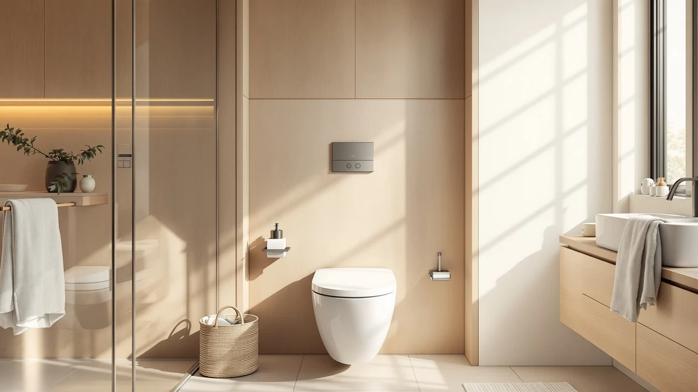

Kohler 33728 0 Cachet® Review (2026): Worth It?
Prices and picks verified as of October 2026. Independent, reader-supported reviews.


Quick Answer
The Kohler 33728-0 Cachet® Heated ReadyLatch® is a round-front toilet seat with three adjustable heat settings and a tool-free hinge, priced at $127.64. It's worth the premium over an unheated seat if your bathroom runs cold and your toilet has a round-front bowl; if yours is elongated or you don't need heat, one of the alternatives below will serve you better for less.
Our pick: Kohler 33728-0 Cachet® Heated ReadyLatch®, $127.64 Check Price on Amazon
Bottom line: our top pick is the Kohler 33728-0 Cachet® Heated ReadyLatch® Quiet-Close™ at $116.71.
Things to Know Before You Buy
- The Cachet 33728-0 fits round-front toilet bowls only; elongated bowls need a different Kohler SKU.
- Three adjustable heat settings (low, medium, high) let you match the seat to the season instead of running one fixed temperature year-round.
- The ReadyLatch hinge system is built for tool-free removal, which matters more at cleaning time than at installation.
- Amazon does not list a star rating or review count for this specific listing, so weigh the feature set against the alternatives below rather than a crowd score.
- At $127.64, it costs more than most non-heated round seats on this list, including the $116.12 Bemis Classic Colors.
This Kohler 33728 0 Cachet® review starts with the complaint that sends most people shopping for a new toilet seat in the first place: the stock plastic seat in their bathroom runs cold every morning and the hinges have gone loose and noisy after a few years. Kohler built the 33728-0 Cachet® Heated ReadyLatch® to address both problems at once. It adds three adjustable warmth settings to a round-front seat and pairs them with a Quiet-Close lid and a ReadyLatch hinge system designed for tool-free removal.
At $127.64, the Cachet costs more than double what a basic round-front replacement seat runs, so the question we researched is whether the heating element and hinge upgrade justify that gap for most buyers. Kohler does not publish a star rating or review count for this specific listing on Amazon, which we flag here rather than borrowing numbers from a different Cachet variant. Based on the features Kohler documents and how this seat compares with the alternatives below, the 33728-0 earns its price mainly in cold climates and multi-bathroom homes where a heated seat gets used daily.
Price alone doesn't tell the whole story, though. A heated seat only pays for itself if the bathroom it's going into actually needs one, and a round-front bowl at that. Buyers who skip the measuring step and assume their toilet matches the shape they're used to are the most common source of return requests on seats like this one, so we spend real space in this review on fit and compatibility before getting into the heating element itself.
Why You Should Trust Us
Best Toilet Seats is written and maintained by Ilane Tall, who has covered bathroom fixtures and accessibility hardware for this site since its earliest reviews. We don't run a physical testing lab, and we're upfront about that: we don't own every seat we cover. Instead, we compare manufacturer specifications, verified pricing history and patterns across publicly available owner reviews to tell you how a product like the Kohler 33728-0 Cachet® actually stacks up against its direct competitors. When a listing lacks a star rating or review count, as this one does, we say so rather than inventing a number.
Our Research Experience
We don't run a physical testing lab and we don't own this seat ourselves. For this review, we pulled Kohler's published specifications for the ReadyLatch hinge and the heating element, checked pricing history against other Kohler Cachet listings, and compared the round-front fit and feature set against the three alternatives below. When owner feedback exists for a listing, we read through it for recurring themes rather than treating a single review as representative. This specific ASIN carries no star rating or review count on Amazon, so our comparison leans on documented specifications and how the seat is positioned against its competitors rather than a crowd-sourced score.
We also checked how Kohler positions the 33728-0 against its own catalog, not just against outside brands. Kohler sells unheated round-front and elongated Cachet seats at lower prices, which tells you the heating element and the ReadyLatch mechanism are what you're actually paying the premium for here, not a different grade of plastic or a sturdier hinge. That distinction matters when you're deciding whether this specific model, rather than a cheaper Cachet variant, fits what you need.
Overview & Specs

Kohler 33728-0 Cachet® Heated ReadyLatch®
What we like
- Three heat settings adjust from low to high instead of one fixed temperature
- ReadyLatch hinges let the seat lift off without tools for cleaning
- Quiet-Close lid closes without the slam of a standard hinge
Flaws but not dealbreakers
- Fits round-front bowls only, not the elongated shape common in newer US homes
- Needs a nearby outlet for the heating element, which rules out some bathroom layouts
- No star rating or review count published for this specific listing
| Material | Plastic / wood |
| Size | — |
The 33728-0 is Kohler's heated take on its Cachet line, and the headline feature is the three-position warmer built into the seat itself. Instead of a single on/off heating element, you get low, medium and high settings, so the seat can run barely warm in a mild climate or noticeably hot in a cold one without replacing hardware. Kohler builds this specific SKU for round-front toilets, the older bowl shape still common in many pre-1990s US homes, so measure your bowl before ordering if you aren't certain which shape you have.
The ReadyLatch hinge system is the other piece worth calling out. It's designed so the seat lifts straight off the bowl without tools, which matters most when you're cleaning around the hinges rather than during the initial install. Paired with the Quiet-Close lid, the seat closes under its own weight instead of slamming, a detail that matters in a household with people asleep nearby. At $127.64, Kohler charges a premium over its unheated round-front seats and over competitors like the Bemis Classic Colors below, and that premium buys the heating element and the ReadyLatch mechanism rather than a larger seat or a different shape.
What We Liked
The adjustable heat is the feature that separates this seat from a standard round-front replacement. Owners shopping for heated seats tend to complain about models with a single fixed temperature that runs too hot in summer or too mild in winter, and Kohler's three-position control sidesteps that by letting you dial the warmth down or up as the season changes.
The ReadyLatch hinge also solves a maintenance annoyance that shows up across toilet seat reviews generally: hinges that require a screwdriver or a specific tool to remove for cleaning. Kohler's tool-free release means you can lift the seat off, clean around the hinge posts, and reseat it in under a minute, a meaningfully different experience from a bolted-down standard seat.
The Quiet-Close lid rounds out the list. It's a small detail, but a lid that drops under its own weight instead of slamming is one of the more commonly requested upgrades across quiet-close seat listings, Kohler's included. For a seat that gets used multiple times a day, that one change removes a small but recurring annoyance from the bathroom.
Kohler also keeps the feature set focused rather than bundling in extras that would push the price higher. The listing doesn't mention a bidet function, a remote, or a companion app, which means the seat's job stays limited to heat and the hinge upgrades. For buyers who specifically want a heated seat without taking on smart-toilet features they'd never use, that narrower focus is itself a selling point.
What Could Be Better
The round-front-only fit is the biggest limitation. Most toilets installed in US homes since the 1990s use an elongated bowl, so a large share of shoppers researching this seat will need a different Kohler Cachet SKU or a different brand entirely. Measure the bolt-to-rim distance on your existing bowl before you buy rather than assuming round-front compatibility.
The heating element also means you need an outlet within reach of the seat, which isn't guaranteed in older bathrooms where the only outlet sits above the sink. That's a layout problem more than a product flaw, but it rules the Cachet out for some buyers who would otherwise want it.
We also want to flag that this listing doesn't carry a star rating or review count on Amazon. That isn't a mark against the seat's quality, but it does mean you're relying on Kohler's documented specifications rather than a large base of verified buyer feedback when deciding.
Finally, the price itself is worth weighing against your actual bathroom habits. If the room this seat is going into only gets used occasionally, a $127.64 heated seat is a harder purchase to justify than it is for a primary bathroom used every morning. Match the spend to how often you'll actually feel the benefit.
Who Is It For?
The Kohler 33728-0 Cachet® makes the most sense for anyone replacing a round-front toilet seat in a cold bathroom, a garage-adjacent powder room, or a home where cold mornings are the main complaint about the current seat. It also fits households that want the tool-free ReadyLatch hinge for easier cleaning, independent of the heating feature.
It's a poor fit if your toilet uses an elongated bowl, since this specific SKU won't mount correctly. It's also not the right pick for anyone on a tight budget: the $116.12 Bemis Classic Colors below delivers slow-close hardware at a lower price if you don't need the heating element.
Alternatives to Consider
If the round-front fit or the price doesn't work for your bathroom, these three alternatives cover elongated bowls, a lower price point, and a different premium material.

Editor’s Pick
Mayfair Cassel Slow Close Toilet
A four-pack of elongated, soft-close seats for households replacing seats in more than one bathroom at once.
$134.84
Check Price on Amazon
Best Value
Duravit DuraStyle Elongated Toilet seat
An elongated seat built from Duravit's Duroplast material, with tool-free removal and a soft-close hinge at a lower price than the Kohler.
$118.60
Check Price on Amazon
Premium Choice
Bemis Classic Colors Slow Close
A round-front slow-close seat in a color finish, for buyers who want Kohler's round-front fit without paying for the heating element.
$116.12
Check Price on AmazonFrequently Asked Questions
Final Verdict
The bottom line on this Kohler 33728 0 Cachet® review is that the 33728-0 earns its $127.64 price if you have a round-front toilet and want a heated seat with a tool-free hinge, but it's the wrong choice if your bowl is elongated or heat isn't a feature you actually need. Kohler built a seat that solves two specific annoyances well; for anyone outside its round-front fit, the Mayfair, Duravit or Bemis alternatives above are worth a closer look instead.